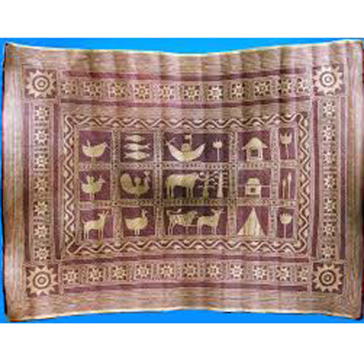

Everyone's favorite 'Shital Pati' art:
It has been passed down from generation to generation for approximately two and a half to three hundred years. This art is widespread in some specific areas of Rajapur Upazila. Rajapur was not the only place where it was famous. Many wise men were born in the traditional silvery Bengal of Jibanananda. Shital Pati is the main furniture for decorating their dream homes. A beautiful and tidy bedroom erases the fatigue of the day, a comfortable bed brings a happy sleep.
